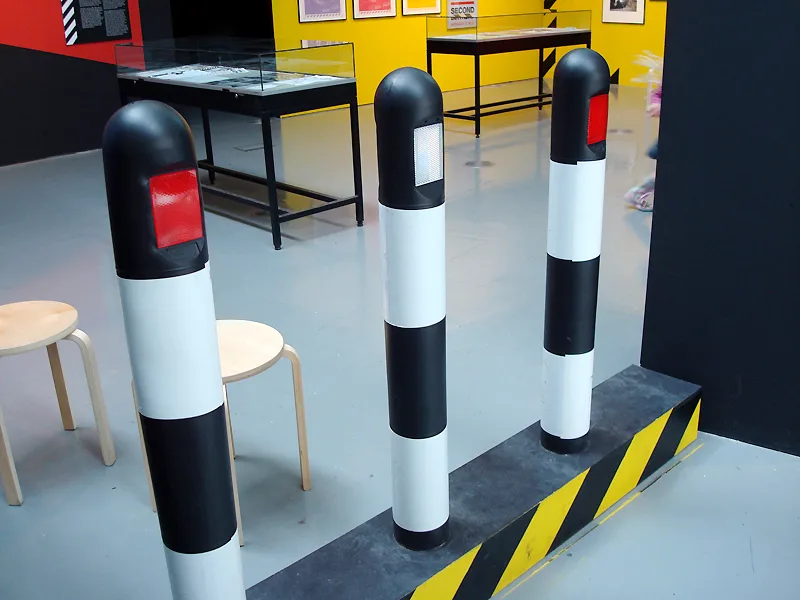
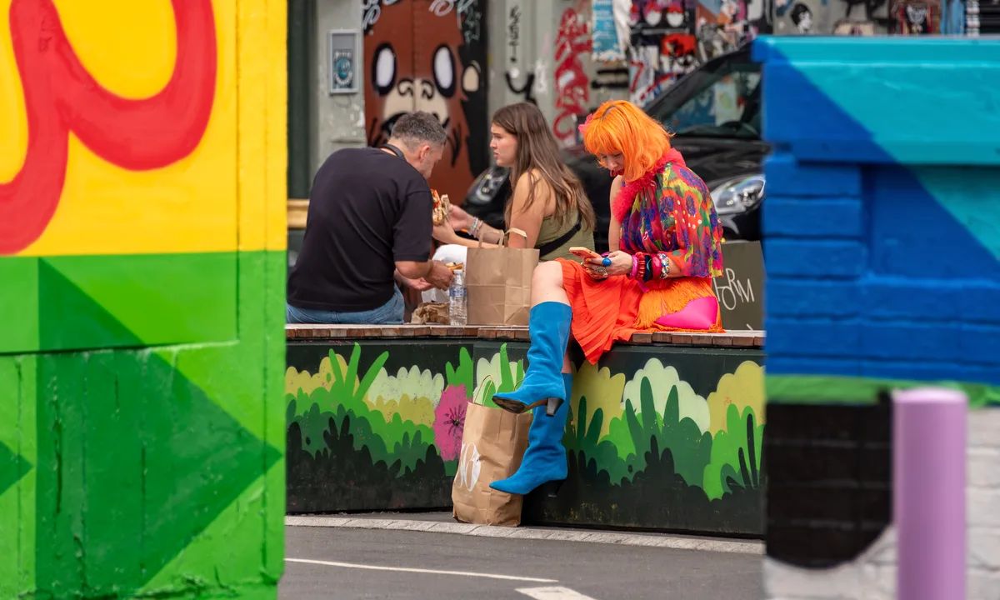

Manchester clubs
Best clubs in Manchester, from the Haçienda's legacy to the Warehouse Project
The club that built Manchester's reputation closed in 1997. What replaced it is a seasonal warehouse series and a handful of small, sound-system-first rooms across the Northern Quarter and Salford.
A reputation built on a building that no longer exists.
Manchester's clubbing reputation rests on a building that no longer exists. The Haçienda closed in 1997 and was demolished five years later, but it set the template the city still follows: warehouses and disused industrial buildings over polished venues, and a DIY streak that runs from Factory Records through to today's independent rooms. The current scene has no single flagship address. It is led by a seasonal club-night series and a handful of small, genre-serious venues that carry Manchester nightlife across the Northern Quarter and Salford.
The Haçienda's legacy.
Factory Records and New Order opened the Haçienda (also written Hacienda Manchester, without the cedilla) on 21 May 1982 in a former yacht builder's warehouse on Whitworth Street West, catalogued as FAC 51. New Order's 1983 single "Blue Monday" became the club's unofficial subsidy: it sold well enough to cover losses the venue itself never stopped making, largely because clubbers spent their money on drugs rather than the bar.

Madonna played her first UK show there in January 1984, two years before the club found its house sound. That happened in 1986, when the "Nude" Friday night, run by Mike Pickering, Hewan Clarke and others, turned it into one of the first British venues playing house music. Two years further on, Pickering and Jon Dasilva's Ibiza-inspired night "Hot" helped launch the acid house scene that the press called Madchester, and gave early stages to Happy Mondays, the Stone Roses and 808 State.
Security incidents, gang violence outside the venue and a police clampdown following the UK's first ecstasy-related death in 1989 wore the club down through the 1990s, but its finances were the deeper problem. It closed for good on 28 June 1997 and was demolished in 2002; the site is now an apartment block that licenses the Haçienda name.
The best clubs in Manchester now.
| Club | Area | Music and character | Best for |
|---|---|---|---|
| The White Hotel | Salford | A converted garage with a forward-thinking, eclectic booking policy and a strong queer following | DIY, underground programming and rarely-booked international artists |
| Soup | Northern Quarter | A bar and intimate club space, formerly Soup Kitchen, focused on local and cult talent | A community-first night out without a big-name lineup |
| Eastern Bloc Records | Northern Quarter | A record shop since 1985 that runs low-ceiling, vinyl-only ‘Open to Close’ nights | Manchester’s own DJs, played on vinyl start to finish |
| The Loft | city centre outskirts | A 200-capacity room on a custom Funktion-One system, opened 2021, house-focused | Headsy tech house through deeper old-school sounds |
| Hidden | city centre | A multi-storey venue on a Void Acoustics system, open since 2015 | House and techno alongside heavy jungle and drum & bass |
| Stage & Radio | city centre | A former 1946 jazz club reopened for dance music in 2016, with its own community radio station | Underground UK DJs and soundsystem culture |
Where to go out in Manchester.
The Northern Quarter, Manchester's converted-warehouse district around Oldham Street, holds Soup and Eastern Bloc Records, along with most of the city's independent bars.

The White Hotel sits further out, in an old garage on the Salford side of the city, a short taxi ride from the centre. None of the three enforces a dress code: Manchester's independent clubs are built around sound systems and bookings, not door policy.
The Warehouse Project Manchester has no fixed address. It runs as a seasonal series, September to New Year's Day plus occasional extra dates, and has moved between industrial spaces since it started in 2006: a disused brewery, the tunnels under Piccadilly station on two separate stints, Victoria Warehouse in Trafford, and since 2019, Depot Mayfield, a former rail depot next to the station. It now also runs a yearly Rotterdam edition, started in 2023. DJ Mag ranked it the fourth-best club in the world in 2025, and past lineups have run from Carl Cox and Sven Väth to Aphex Twin and Richie Hawtin.
Manchester's bass and grime side runs alongside the house and techno scene rather than apart from it. LEVELZ, the Manchester crew that grew out of the city's grime and bassline scenes, filled a five-hour Boiler Room broadcast from the city in 2016, and Hidden, one of the current venues above, books jungle and drum & bass nights alongside its house and techno bills.
Manchester clubs FAQ.
What happened to the Haçienda?
It closed on 28 June 1997 after years of financial losses and security problems, and was demolished in 2002. An apartment block now stands on the site, built under the same name, which its developer licensed from former co-owner Peter Hook.
What is the Warehouse Project?
A seasonal series of club nights, not a permanent venue. It runs from September to New Year's Day each year, currently at Depot Mayfield next to Piccadilly station, and DJ Mag ranked it the world's fourth-best club in 2025.
Is there a dress code at Manchester's clubs?
No, at the independent venues that define the current scene. The White Hotel, Hidden and the Warehouse Project all operate without a formal dress code.
What's the best area for clubbing in Manchester?
Most Manchester night clubs sit in the Northern Quarter, home to Soup and Eastern Bloc Records, plus most of the city's independent bars. The White Hotel is the exception, set in Salford on the edge of the centre.
What's the most famous nightclub in Manchester?
Historically, the Haçienda, closed since 1997 but still the reference point for the city's clubbing reputation. Among venues actually open today, the Warehouse Project carries the closest thing to that status, ranked fourth-best club in the world by DJ Mag in 2025.
Sources.
- Wikipedia: The Haçienda
- Wikipedia: The Warehouse Project
- Resident Advisor: The Best Clubs in Manchester in 2026
- nightclub.org.uk: The White Hotel
- Manchester Tourism: Best Nightclubs in Manchester
- Video embeds are drawn from this site's own catalogue of recorded DJ sets, as of September 2026.
Continue reading